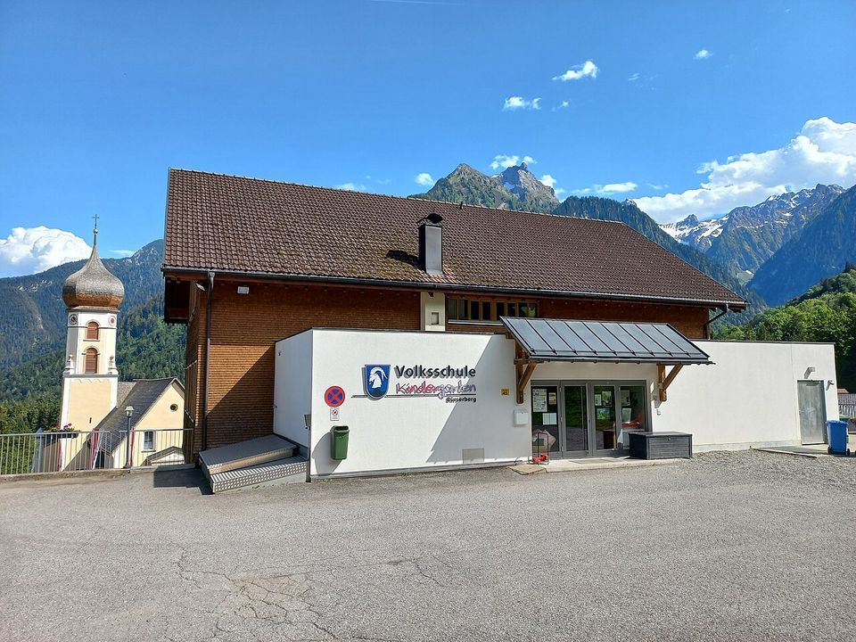

École des Tilleuls


L'extension de l'école des Tilleuls, à La Motte-Servolex, est le projet le plus récent de l'atelier : 380 m² ajoutés à l'école, livrés en 2025.
C'est un bâtiment communal : comme pour une maison, l'atelier l'a suivi de la première rencontre à la réception du chantier.
- Programme
- Extension d'école
- Lieu
- La Motte-Servolex
- Année
- 2025
- Surface
- 380 m²
- Budget des travaux
- 1,2 M€ HT